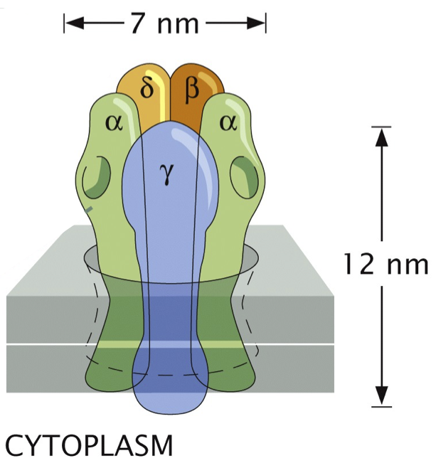

Exercise 6.1: Diagnosing nonidentifiability with MCMC
Caltech’s Henry Lester has been studying nicotinic acetylcholine receptors for decades. A schematic of the receptor, which is an ion channel, and its five (four unique) subunits, adapted from the book Physical Biology of the Cell 2, is shown below.

When acetylcholine ligands bind to the α units (the binding sites are shown as divots in the schematic), the channel opens and ions can flow through.
In a 1995 paper (Labarca, et al.), Labarca and coworkers in the Lester lab measured the (normalized) voltage across the ion channel for varying concentrations of acetylcholine. They did this for five different genotypes, shown below, where an asterisk denotes a mutation.
\(\alpha_2\beta\gamma\delta\) (wild type)
\(\alpha_2^*\beta\gamma\delta\)
\(\alpha_2\beta\gamma^*\delta\)
\(\alpha_2^*\beta\gamma^*\delta^*\)
\(\alpha_2\beta^*\gamma^*\delta^*\)
You can download the data set here: https://s3.amazonaws.com/bebi103.caltech.edu/data/lester_acetylcholine.csv.
We can work out theoretically that the fraction of time that an ion channel is open follows a logistic equation,
\begin{align} f_\mathrm{open}(c) = \frac{1}{1 + \mathrm{e}^{-\beta F(c)}}, \end{align}
where \(c\) is the concentration of acetylcholine, \(\beta = 1/k_B T\) is the inverse thermal energy, and \(F(c)\) is the Bohr parameter (named after Christian Bohr, the father of Nobel laureate Niels Bohr and of Danish national team footballer and mathematician Harald Bohr, and grandfather of Nobel laureate Aage Bohr), given by
\begin{align} F(c) = 2\Delta E_\mathrm{u} + 2 k_B T \ln\left(\frac{1+c/K_\mathrm{do}}{1+c/K_{dc}}\right). \end{align}
Here, \(\Delta E_\mathrm{u} = E_\mathrm{unbound}^\mathrm{closed} - E_\mathrm{unbound}^\mathrm{open}\) is the energy difference between the closed and open state of the ion channel without any acetylcholine bound, \(K_\mathrm{do}\) is the dissociation constant for acetylcholine binding the receptor when it is open, and \(K_\mathrm{dc}\) is the dissociation constant for acetylcholine binding the receptor when it is closed.
If we assume that in the limit of large concentrations the ion channel is completely open, then the normalized voltage \(v(c)\) across the channel is given by \(f_\mathrm{open}(c)\); \(v(c) = f_\mathrm{open}(c)\).
Propose a generative model for this system. Then use MCMC to diagnose potential nonidentifiabilities.